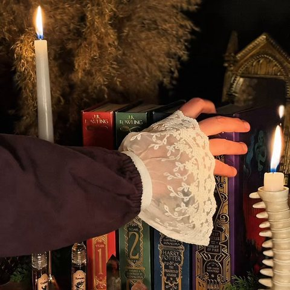
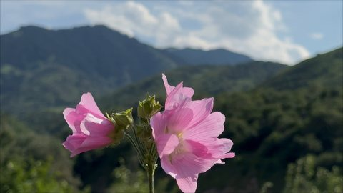

Alisa Makarenko
Videographer · Visual Content Creator
Almaty, Kazakhstan





Profile
I film calm, atmospheric video: places, lifestyle, nature and objects. I work on iPhone and do the editing and colour myself. Since 2023 I have produced and co-hosted the YouTube show Witching Hour. Open to commercial shoots for brands and spaces, UGC and social media content.
What I shoot
- Hospitality & Tourism — glamping sites, A-frame cabins, hotels, country lodges
- Lifestyle & Places — cafés, restaurants, coffee shops, spas, studios
- Brands & Products — small brands, cosmetics, homeware
Experience
Personal footage, Almaty
Videographer and visual content creatorPersonal portfolio
- Film nature, spaces, lifestyle, animals and objects; post short clips on Instagram (@alissayeya).
- Handle the whole cycle myself: shooting on iPhone, editing in DaVinci Resolve and CapCut, colour grading.
- Shot product footage for the Witching Hour show.
Witching Hour (Ведьмин час), YouTube show and podcast
Producer, scriptwriter and co-hostDec 2023 – present
- Design episode thumbnails and cover art in one consistent visual style.
- Make the show's Shorts: the channel's 13 Shorts total 4.55M views, about 92% of all its YouTube views.
- Run recording sessions (light, sound, camera); edit the video jointly with my co-host.
Skills · Kit and software · Links
Skills
iPhone videography · Composition and framing · Working with natural light · Video editing · Colour grading · Reels, Shorts, TikTok · Product footage
Kit and software
iPhone, DaVinci Resolve, CapCut, Lightroom, Photoshop
Links
- Videographer portfolio: boozybatsmain.github.io/alisa-makarenko/video/en
- Producer portfolio: boozybatsmain.github.io/alisa-makarenko/en